Les enregistrements
L'onglet de gestion des enregistrements permet de gérer toutes les informations relatives à un enregistrement :
- les champs d'informations : repère, nom de la voie, description, proposition, observation terrain, sous-catégorie, nom de l'adhérent, email, téléphone, réponse de Toulouse Métropole, commentaire final de l'association ;
- la sous-catégorie ;
- une commune et un pôle ;
- une priorité ;
- un statut ;
- la position géographique ;
- les images éventuelles ;
- l'affichage ;
- la modération ;
- la date de création ;
- un attribut de modération ;
- un attribut d'affichage ;
- le mode de géolocalisation.
Un enregistement appartient à une et une seule sous-catégorie.
Il n'y a pas de limitation du nombre d'enregistrements par sous-catégorie.
Un enregistrement est défini par :
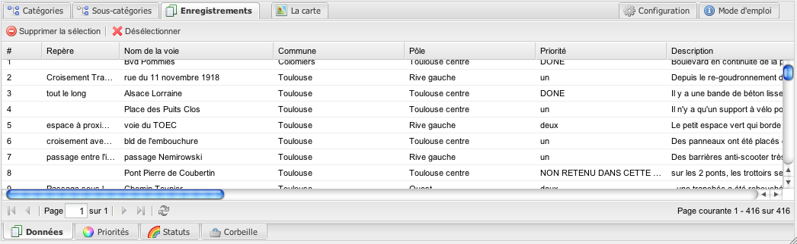
- un numéro d'identification - non modifiable ;
- un repère de rue - modifiable ;
- un nom de voie - modifiable ;
- une commune - modifiable ;
- un pole - modifiable ;
- une priorité - modifiable ;
- une description - modifiable ;
- une proposition - modifiable ;
- un observation terrain - modifiable ;
- une sous-catégorie - modifiable ;
- un attribut de modération - modifiable ;
- un attribut d'affichage - modifiable ;
- une image - modifiable.
- des coordonnées géographiques - modifiable ;
- une date de création - modifiable ;
- un mode de géolocalisation - non modifiable ;
- un nom d'adhérent - modifiable ;
- un email d'adhérent - modifiable ;
- un téléphone d'ahérent - modifiable ;
- une réponse de Toulouse Métropole - modifiable ;
- un commentaire final de l'association - modifiable ;
- un attribut de statut - non modifiable ;
La modification des tous les champs qui caractérisent l'enregistrement - hormis la position géographique, la sous-catégorie, le pole, la commune, et la gestion des images - se fait grâce à un double-clic sur la cellule et en modifiant le contenu.
Une fois la modification effectuée il suffit de cliquer en-dehors de cette cellule pour que la modification prenne effet immédiatement en base de données.
### L'affectation à la commune et au pôle territorial est renseignée automatiquement par l'application sur la base de la position géographique, il est cependant possible de les modifier le cas échéant en sélectionnant une autre commune ou un autre pôle :
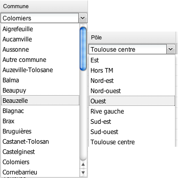
### Il est possible d'associer une image a un enregistrement en double-cliquant sur la cellule du champ 'Image' - ça ouvre une fenêtre qui permet de sélectionner une image et de l'uploader sur le serveur. Les extensions autorisées sont jpeg, jpg, png et gif, la taille maximum autorisée est d'1 Mo :
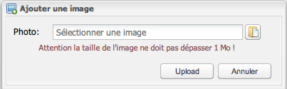
Si une image est déjà présente, il sera alors possible de la modifier ou la supprimer en double-cliquant sur la cellule du champ 'Image' de l'enregistrement :
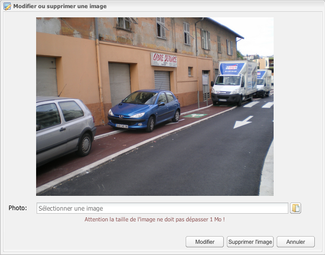
### La position géographique de l'enregistrement peut être modifiée en double-cliquant sur les champs 'Latitude' ou 'Longitude', une fenêtre cartographique s'ouvre et il est alors possible de modifier la position géographique en déplaçant le marqueur :
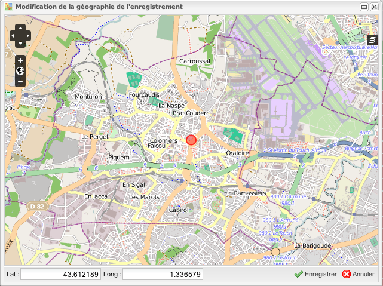
Il est possible de modifier le fond cartographique pour afficher un rendu différent (les données proviennent du projet OpenStreetMap et du service Bing Maps pour les images satellites) :
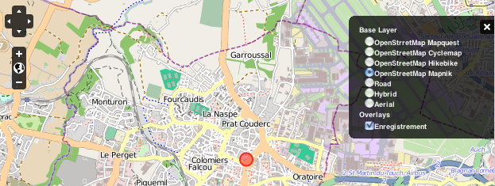
### La modération s'effectue via la case à cocher 'Modération'. Lorsqu'un enregistrement est ajouté en base de données, celui-ci est considéré comme 'non modéré', il n'est pas affiché sur la cartographie. Une fois l'enregistrement modéré, ce dernier est affiché sur la carte et un mail est envoyé au contributeur pour le remercier de sa participation et de l'engagement du processus de résolution du problème soumis. A l'ouverture de l'interface d'administration, une alerte prévient qu'un ou plusieurs enregistrements sont en attente de modération :
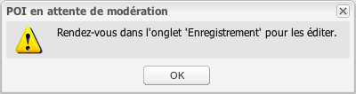
Il est possible de visualiser un enregistrement sur la carte en effectuant un clic droid sur l'identifiant (ie. le premier champ), l'onglet 'Carte' avec l'enregistrement s'ouvre :
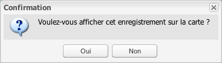
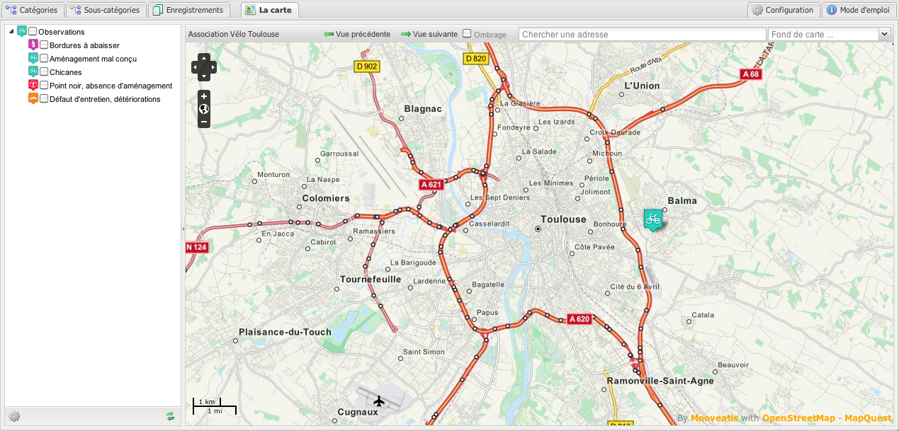
Par défaut, la pagination commence à partir de 500 enregistrements, il est possible de modifier ce chiffre pour plus de souplesse. Veuillez contacter l'administrateur pour modifier ce chiffre :
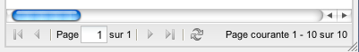
### La suppression d'un ou plusieurs enregistrements s'effectue en les sélectionnant et en cliquant sur le bouton'Supprimer'. La suppression est juste une mise en corbeille. Il est alors possible de les remettre dans la liste des enregistrements en cas d'erreur lors de la suppression.
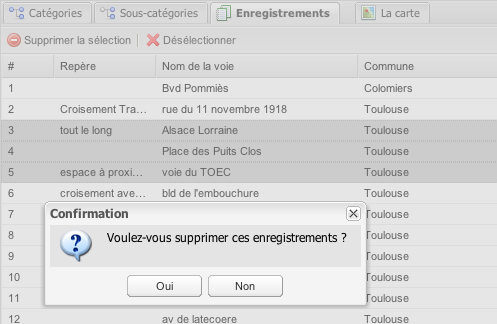
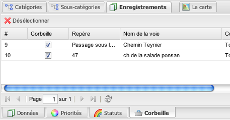
### Les statuts et priorités sont administrables dans les onglets ad-hoc :
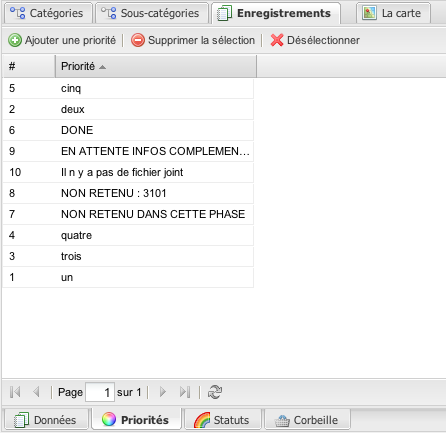
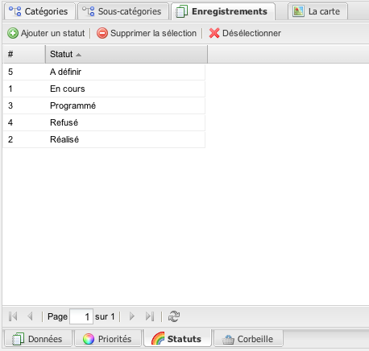